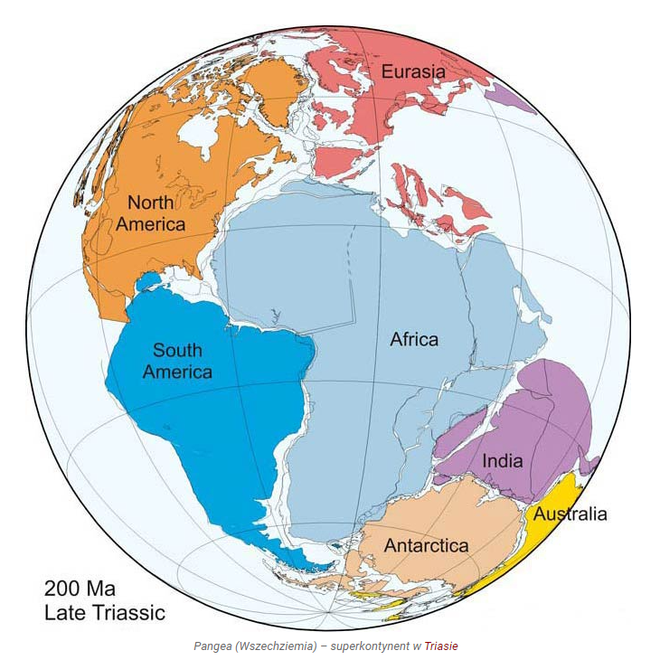

Ruchy kontynentów
Definicja
Wędrówka kontynentów, epejroforeza – ruch kontynentów, powodujący zmianę ich położenia względem siebie nawzajem oraz względem biegunów geograficznych i magnetycznych Ziemi.
Historia teorii
W XIX wieku, kiedy mapy stały się dokładniejsze, wielu uczonych zwróciło uwagę na fakt, że kontynenty "pasują" do siebie jak elementy układanki. Co więcej, na odpowiadających sobie wybrzeżach znaleziono te same formacje skalne mimo, że lądy te były oddalone od siebie o tysiące kilometrów. Do tego takie same skamieniałości znajdowano w miejscach zupełnie odmiennych i oddalonych, np. na Antarktydzie i w Indiach. To skłoniło uczonych do spekulacji na temat "ewolucji" litosfery ziemskiej. Jedną z teorii wysunął w 1912 roku Alfred Wegener (tzw. teoria Wegenera), nie zyskała ona jednak wielu zwolenników, być może dlatego, że nie wyjaśniała, w jaki sposób kontynenty mogą się przemieszczać. W latach 30. XX wieku hipoteza Wegenera została zarzucona, a na początku lat 60. wykrystalizowała się nowa teoria tektoniki płyt, w znacznym stopniu oparta o wywody Wegenera, ale wyjaśniająca mechanizm wędrówki kontynentów.
Etapy wędrówki
Na podstawie teorii tektoniki płyt można dziś – z dużym prawdopodobieństwem – odtworzyć zmiany, jakim ulegała skorupa ziemska w ciągu ostatnich 600 mln lat. Według teorii tektoniki płyt wędrówka (dryf) kontynentów odbywa się już od co najmniej 2,5 mld lat. Mogą o tym świadczyć najstarsze, pofałdowane skały w Kanadzie, oceniane przez geologów na co najmniej 2 mld lat. Oto zasadnicze etapy wędrówki kontynentów w okresie od 1100 mln lat temu do dziś:
- 1100 mln lat temu – formuje się superkontynent Rodinia
- 750 mln lat temu – Rodinia rozpada się na trzy części – Laurencję, kraton Konga i ProtoGondwanę
- 600 mln lat temu – fragmenty Rodinii na krótko ponownie się stykają, tworząc nowy superkontynent – Pannocję
- 550 mln lat temu – Pannocja zaczyna się rozpadać, tworzą się kontynenty i oceany Paleozoiku
- 250 mln lat temu – na Ziemi ponownie istnieje jeden superkontynent – Pangea. Jest on otoczony olbrzymim oceanem Panthalassa, masy lądowe częściowo odgradzają od niego mniejszy ocean Tetydy
- 180 mln lat temu – superkontynent Pangea zaczyna pękać na dwie części, które oddalają się od siebie tworząc: Laurazję na półkuli północnej i Gondwanę na półkuli południowej
- 135 mln lat temu – początek rozpadu Laurazji i Gondwany – pojawiają się zarysy dzisiejszych kontynentów: Laurazja daje początek Ameryce Północnej i Eurazji, a Gondwana rozpada się na: Amerykę Południową, Afrykę, Antarktydę, Australię i Indie
- 100 mln lat temu – Indie odrywają się od Afryki i dryfują w stronę Azji
W liczącej 4,5 mld lat historii Ziemi, z pewnością miały miejsce jeszcze inne znaczące wydarzenia tektoniczne. Obecnie naukowcy sądzą, że kontynenty kilkakrotnie łączyły się w większe masy lądowe, jeszcze przed uformowaniem Rodinii – m. in. 3,3 mld lat temu najprawdopodobniej powstał superkontynent Walbara, a 2,7 mld lat temu ponowne zderzenie kontynentów utworzyło superkontynent Kenorland. Brak jednak wystarczających danych na określenie rozmiarów, położenia, konfiguracji – i ilości owych superkontynentów.
Treść skopiowano stąd http://centrum-geoedukacji.pl/wp-content/uploads/sites/4/2021/04/3_KONTYNENTY-W-RUCHU.pdf
Moje ulubione utwory muzyczne
| Tytuł | Wykonawca/y | Album | Rok | Link |
|---|---|---|---|---|
| Stressed Out | Twenty One Pilots | Blurryface | 2015 | LINK |
| Heathens | Suicide Squad: The Album | 2016 | LINK | |
| Where Is My Mind | Pixies | Surfer Rosa | 1988 | LINK |
| In the House - In a Heartbeat | John Murphy | 28 Days Later: The Soundtrack Album | 2003 | LINK |
| Bury the Light | Victor Borba, Casey Edwards | Devil May Cry 5 Special Edition Vergil's Rebirth Sound Selection | 2020 | LINK |
| Path | Apocalyptica | Cult | 2000 | LINK |
| Animal I Have Become | Three Days Grace | One-X | 2006 | LINK |
| YouSeeBIGGIRL/T:T | Hiroyuki Sawano | "Attack on Titan" Season 2 Original Soundtrack | 2017 | LINK |